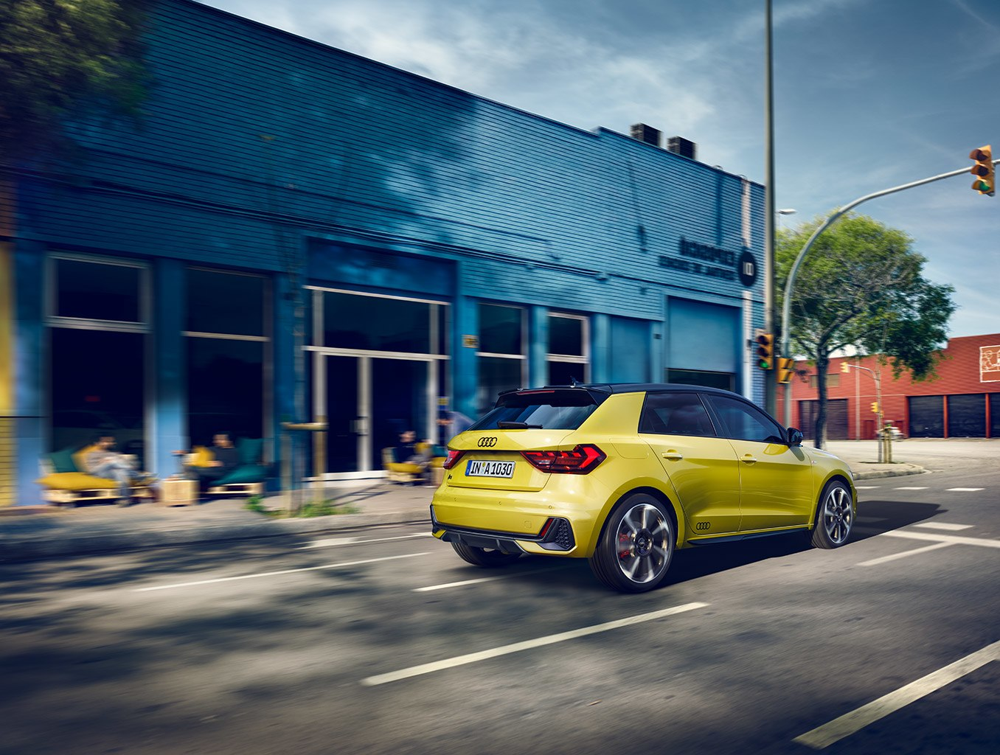

Spacious, sporty, emotive.
The new Audi A1 Sportback redefines the compact segment. Its striking, masculine design with genes of the sporty Ur-quattro characterizes the second generation of the successful compact car. The interior is accordingly driver-focused, with its emotive, customizable design. “The sportiest interior in the compact class,” that was the stated aim. With its infotainment and driver assistance systems on a par with the full-size class, the A1 Sportback is firmly networked with the digital world.
Make it your own.
The new A1 Sportback is available in a choice of ten colors that impressively showcase the design language. The roof of the compact model can be optionally finished in a contrasting color from the A-pillar to the roof edge spoiler. The exterior mirror housings, the side front spoiler lips and the side sills are also available in a contrasting color.

More space and comfort.
The new A1 Sportback is much more spacious – making life much more comfortable for the driver, front passenger and rear passengers. The A1 Sportback has grown significantly in length – with an additional 56 millimeters (2.2 in), it now measures 4.03 meters (13.2 ft). At the same time, the width has remained almost the same at 1.74 (5.7 ft) meters. The new-generation model is only 1.41 meters (4.6 ft) in height – including aerial, the car is 1.43 meters (4.7 ft) tall. Luggage capacity has increased by 65 liters (2.3 cu ft). Normal capacity is 335 liters (11.8 cu ft); with the rear seats folded down, this increases to 1,090 liters (38.5 cu ft). Loading sill height is a comfortably low 67 centimeters (2.2 ft).